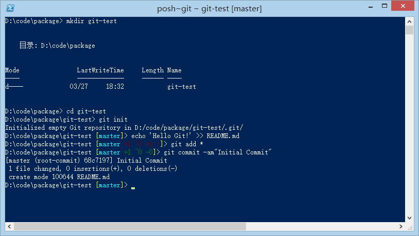

2015.03.29 19:30 | Rotunda, SJTU MH
A distributed version control system developed by Junio Hamano and Linus Torvalds.
I'm an egotistical bastard, and I name all my projects after myself. First 'Linux', now 'Git'. -- Linus Torvalds
I'm an egotistical bastard, and I name all my projects after myself. First 'Linux', now 'Git'.
-- Linus Torvalds

$ git branch testing
$ git checkout testing # git checkout -b testing # git checkout -b testing master
$ git commit
# Head poings to master $ git merge experiment
# Head points to experiment $ git rebase master
# Head points to master $ git merge master $ git branch -d experiment
Branch!
$ git clone {remote-url} # Time goes and goes $ git pull
$ git status $ git add . $ git add --all $ git reset $ git commit $ git commit -a $ git commit -am'{Commit message}' $ git push -u {remote} {remote-branch} $ git push $ git pull
$ git {verb} -h $ git {verb} --help $ git help {verb}
$ git log $ git log --author 'Arrow Rowe' -StqChart -p --format="%h %Cgreen%ad%Creset %s" $ git log --graph --oneline
$ git config -e $ git config -e --global
$ git diff $ git diff head $ git diff head~ $ git diff {from} {to} $ git diff head^3 head~ $ git diff {file} $ git diff {from} {file} $ git diff {from} {to} {file}
$ git checkout {wherever-you-want} $ git checkout head~~~ $ git checkout {where} {file} # Danger! $ git checkout {file} # Danger!
# PhpStorm .idea/ # Python *.py[cod] # Composer vendor/ # NPM node_modules/
$ git commit --amend $ git push -f $ git branch -f {branch} {where}
$ git branch $ git branch -r $ git branch -a $ git branch -v $ git branch -vv
! [rejected]
$ git pull --rebase
error: Your local changes to the following files would be overwritten by merge:
$ git stash $ git pull $ git stash pop # Deal with confliction...
$ git stash list $ git stash show $ git stash drop
Just follow the hint...
from
<<<<<<< Updated upstream // Someone else has done this! ======= // My work not committed >>>>>>> Stashed changes
to
// My work not committed is left!
$ git stash $ git checkout {the-correct-branch} $ git stash pop # everything OK now...
$ git reset head~ # or wherever you want
arrowrowe.github.io
/